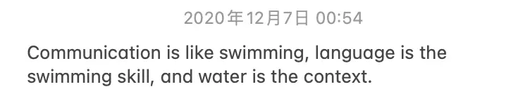

27 February 2025
呢個sem報咗個叫Enhancing English Excellence嘅course（簡單嚟講即係英文班），諗住reg嘅應該大部份都係講中文嘅，可以識返幾個亞洲人朋友。雖然開頭插曲好多，又以為會係教啲簡單academic English，但上咗三堂發現意外地都幾有用。
今日係講presentation同埋小組傾project，因為嚟上堂嘅人得四個（覺得老師勁慘），所以執presentation skills可以逐個人慢慢執，由肢體動作到表達都有收到啲有建設性嘅建議。我覺得最有用嘅係佢有俾個實際可以用得上嘅框架我哋用，等聽嘅人可以明白我哋想表達嘅框架係咩、可以先做心理準備要聽啲咩、點參與；有清晰框架我哋講嘅時候都比較容易記住自己想講咩，唔使東一忽西一忽咁。雖然開頭覺得臨場鳩噏都唔係唔得啫，但實際試寫嗰陣覺得個脈落清晰好多，同埋有個框架就算緊張㪐㩿（甩咳）都唔會一下子唔記得自己想講咩。的確係幾有用嘅takeaway。
我覺得最為受用嘅係我變得比較有自信。老師有講好多一下子令我醍醐灌頂嘅說話，例如話就算啲同學有識第二門外語，都好少好似我哋咁勁可以去一個全外語國家，用當地語言讀書生活。即係話其實去得留學英文肯定都有返咁上下先會應付到，我由中學開始全英教學，都無意識到其實好似唔係太多人有呢個外語能力。
佢又提到有語言方面嘅障礙其實應該要主動同老師/小組同學提出。尤其是係老師，佢哋一嚟有職責要令我哋明白上堂內容，二嚟佢哋都會想知我哋有無咩問題。我又諗到其實我呢科得我一個亞洲人，老師通常設計課程嘅時候都係按本地學生去諗，而甚少考慮到留學生嘅語言/文化隔閡。所以佢都可能無諗到會有人跟唔上，但我之前一路都無諗到呢樣嘢，只係覺得「應該都係我睇得唔夠多書先會唔知佢哋講緊咩啫」。
呢幾星期做copyediting功課我都覺得越嚟越吃力，因為要睇嘅嘢實在太多同埋好多都好tricky，非母語者無呢個觸覺似乎又算正常？下星期考final，可能我都要問下老師可以點樣抱下佛腳會比較好。有份功課入面出現咗一個指向「某人」嘅代名詞。本身篇嘢兩句開頭係"He... She..."，我將佢改為"He... He..."，但上堂講功課嗰陣先意識到原來而家政治正確係應該要用"They... They..."。對喺中文環境成長，所有代名詞都係「佢/佢哋」（國語係「他/他們」一個包攬全部嘅我嚟講，係唔會一下子意識到呢樣嘢。或者我都應該要提下呢樣嘢，等老師可以知道我思維/做法點解會唔一樣。當然呢個都係一個學習嘅過程（知道唔代表我同意）。
總之上咗幾堂，先不論我到底有講多咗幾多英文，加上我喺三藩市同男友一齊多亂噏嘅經驗，又覺得其實都唔使太怕講錯，最多講錯咪講多次。又唔係我母語，講得唔好又好似合理。
寫寫下諗起之前寫過啲咁嘅嘢，中二到不得了，而家睇返又覺得多咗一重意思，就係除咗交流呢樣嘢係無絕對答案之外，其實佢嘅技巧亦都好似細個嗰陣練水咁，係可以練返嚟嘅。即係話，屌，講錯咪講錯囉，多錯咪多學習！
所以其實上英文班都係屎窟撞棍，本身會諗英文系出身、準備投身出版業都仲要嚟學英文，講出嚟都有啲shameful，一路說服自己係嚟識人。點知又會真係有嘢袋到落袋，仲要可以有多個角度去睇自己。對於開始慢慢適應文化環境嘅我嚟講又係多一個助力，令我更加意識到比起收埋自己文化背景去夾硬融合（無可能做到），搵方法求同存異其實係更好嘅方法。除咗我自己意識到，都要令大家知道呢樣嘢，呢個亦都係我慢慢開始實行緊嘅事：有得分享嘅時候都會盡量講啲亞洲嘢，同時都會做下啲比較等大家又了解到多啲我嘅文化背景等等。思考呢啲嘢同埋做比較嘅時候都係一個我去了解唔同文化嘅好機會，所以我都幾享受做呢樣嘢（其實應該要寫低佢）！
又咁講，其實我都幾enjoy咁樣寫隨筆嘅過程，寫嘅時候會意識到同前一篇嘅諗法又會有唔一樣，或者會意識到之前係喺度鑽緊牛角尖。雖然呢個網無人問津，但我都非常享受呢個用唔同媒介（包括簡單程式語言）寫作嘅過程。用文字紀錄思考過程又同拍片/影相有唔同嘅效果，細膩嘅點又會唔一樣。唯一壞處係成日都係凌晨先諗到，次次打完都四五點⋯⋯😴